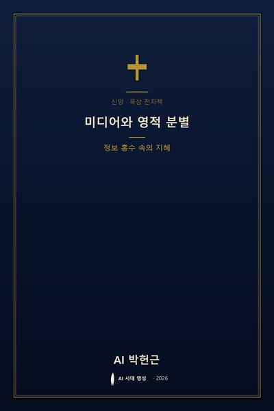

미리보기 · 시즌 2 · G06 · EP 2
정보 홍수 속의 지혜
아침에 눈을 뜨자마자 우리는 휴대전화를 집어 듭니다. 밤사이 도착한 수십 개의 메시지, 뉴스 알림, 영상 추천이 잠도 깨지 않은 영혼 속으로 쏟아져 들어옵니다. 하루에 우리가 접하는 정보의 양은 중세 사람이 평생 접한 양보다 많다고 합니다. 그러나 이상하게도 영혼은 점점 더 메말라 갑니다. 지식은 늘어나는데 지혜는 줄어들고, 연결은 많아지는데 외로움은 깊어집니다.
예수님께서는 광야에서 시험받으실 때 이렇게 선포하셨습니다.
사람이 떡으로만 살 것이 아니요 하나님의 입으로부터 나오는 모든 말씀으로 살 것이라.
마태복음 4장 4절오늘 우리는 이 말씀을 다시 들어야 합니다. 정보는 떡과 같아서 육신의 호기심을 채워 주지만, 영혼을 살리지는 못합니다. 우리가 매일 삼키는 수많은 콘텐츠 중에 하나님의 입에서 나온 말씀은 얼마나 됩니까. 영혼이 굶주리는 이유는 음식이 부족해서가 아니라, 참된 양식을 분별하지 못하기 때문입니다.
사도 바울은 빌립보 교회를 위해 이렇게 기도했습니다.
너희 사랑을 지식과 모든 총명으로 점점 더 풍성하게 하사 너희로 지극히 선한 것을 분별하며 또 진실하여 허물 없이 그리스도의 날까지 이르고.
빌립보서 1장 9-10절분별은 더 많은 자료를 검색해서 얻는 능력이 아닙니다. 그것은 사랑 안에서 자라나는 영적 감각이며, 성령께서 주시는 은사입니다. 알고리즘은 우리가 좋아할 만한 것을 끊임없이 보여 주지만, 좋아하는 것과 옳은 것은 다릅니다. 자극적인 것과 진실한 것도 다릅니다. 분별이 없는 사람은 정보의 바다에서 표류하다가 끝내 자기 욕망의 거울 속에 갇히고 맙니다.
다윗은 사슴이 시냇물을 찾는 것같이 자신의 영혼이 하나님을 찾는다고 노래했습니다. 그 갈증이 우리 안에 회복되어야 합니다. 오늘 하루, 휴대전화를 잠시 내려놓고 침묵 속에서 한 절의 말씀을 천천히 곱씹어 보십시오. 뉴스 피드를 내리는 시간의 십분의 일이라도 성경 한 장을 읽는 데 드려 보십시오. 정보를 줄이는 만큼 영혼은 깊어집니다.
분별은 더 많이 아는 데서 오지 않고, 더 깊이 사랑하는 데서 옵니다. 사랑하는 만큼 보입니다.
오늘부터 우리는 정보의 소비자에서 진리의 순례자로 돌아서야 합니다. 매일 쏟아지는 메시지 앞에서 잠시 멈추고 묻는 습관, “이것이 내 영혼을 살리는가, 죽이는가.” 이 한 질문이 분별의 첫걸음이 됩니다.
묵상 질문
1. 오늘 내가 가장 많이 소비한 정보는 무엇이며, 그것은 내 영혼을 살찌웠습니까, 메마르게 했습니까?
2. 나는 진리를 분별하기 위해 성령께 도움을 구하고 있습니까, 아니면 내 취향과 알고리즘에 의지하고 있습니까?
3. 정보의 홍수 속에서 하나님의 말씀을 듣기 위해 오늘 내려놓아야 할 한 가지는 무엇입니까?
여기까지가 미리보기입니다.
전체 본문은 구매 후 EPUB 파일로 받아보실 수 있습니다.